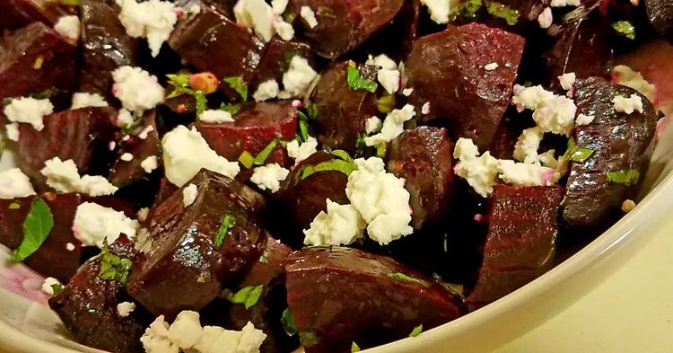

Salad

Roasted Beets with Feta
This feta and roasted beet salad is easy to make for a colorful and elegant side dish. I love making this with beets and shallots straight from our local farmers' market.
Ingredients
- 1 tablespoon red wine vinegar
- 1 tablespoon balsamic vinegar
- 2 tablespoons extra-virgin olive oil
- 2 tablespoons minced fresh parsley
- ¼ cup minced shallot
- 4 beets, trimmed, leaving 1 inch of stems attached
- ¼ cup crumbled feta cheese
Steps
- Preheat the oven to 400 degrees F (200 degrees C). Wrap each beet individually in aluminum foil and place onto a baking sheet.
- Bake beets in preheated oven until easily pierced with a fork, 45 minutes to 1 hour. Allow beets to cool until you can handle them. Peel beets and cut into 1/4-inch slices.
- While beets are roasting, whisk shallots, parsley, olive oil, balsamic vinegar, and red wine vinegar together in a bowl until blended; season with salt and pepper and set aside.
- Place warm, sliced beets onto a serving dish; pour vinaigrette over the beets and sprinkle with feta cheese.